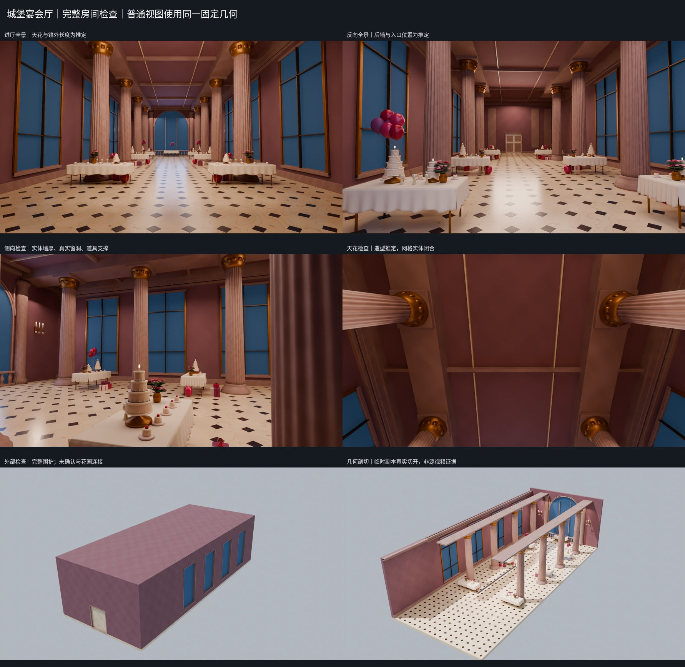
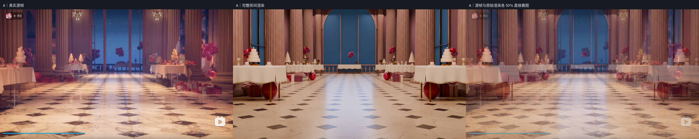
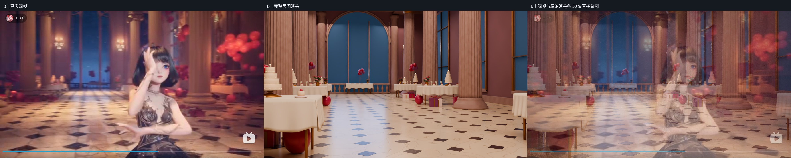
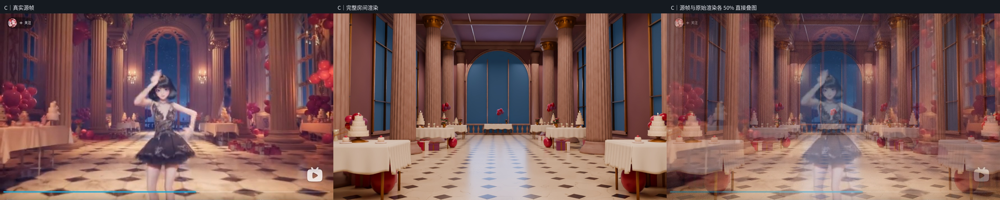

城堡宴会厅 · 完整房间检查
2026-10-10 · 真实源帧近似重建，几何完整性续修
围护、网格、通行与 GLB 回导检查通过地板、四面墙、天花、真实门窗洞口和厚度回边已形成有界厅体。没有为特定相机隐藏或搬动物件。天花、后墙及入口明确是推定补全。
结构验证
- 1,597 个实体网格，275,804 个三角面。逐件检查：零开边、零非流形边、零退化三角面。
- 10,800 条常规围护射线与 991,990 条独立密集边缘射线均无漏出；全部 10 个门窗孔另通过 25,244 点无实墙遮挡检查。约 2.3 模型单位宽的中央通行带通过 785 个样本检查。比例推定，非实测米数。
- GLB 回导物体名称与三角面数量一致；双向顶点误差 0.0，表面积相对误差 0.0；所有使用图片已内嵌。
- 检查是有限数值/视觉抽样，不是隐藏原布局的证据或工程认证。
完整厅体检查
反向、侧向、顶面和外部可检查同一实体。剖切图仅在临时副本中真实切开墙顶，交付模型保持完整。以下画面不属于原视频证据。

源图、渲染与直接叠图
原视频 BV1aw411T7ws。A 00:45:15；B 01:15:07；C 01:13:44。A/C 相近正面，B 小幅斜向；不宣称三个独立校准基线。源图只做固定矩形裁切，没有透视拉伸。叠图采用真实源帧与原始渲染各 50%。



仍然存在的差异与推定
- 相机手工对齐，人物遮挡、柱列与窗的比例、花束/甜品细节、材质纹理和光照仍有差异。叠图保留这些残差。
- 镜头后方墙体、双扇入口、天花与结构厚度为合理补全，并未被原视频验证。
- 入口去向未知，没有确认或拼接花园连接。
- 窗外仅保留蓝色夜景材质表达，未声称重建真实外部环境。
详细范围、文件使用方式及证据标签参见同包中文 README 和 JSON 检查记录。